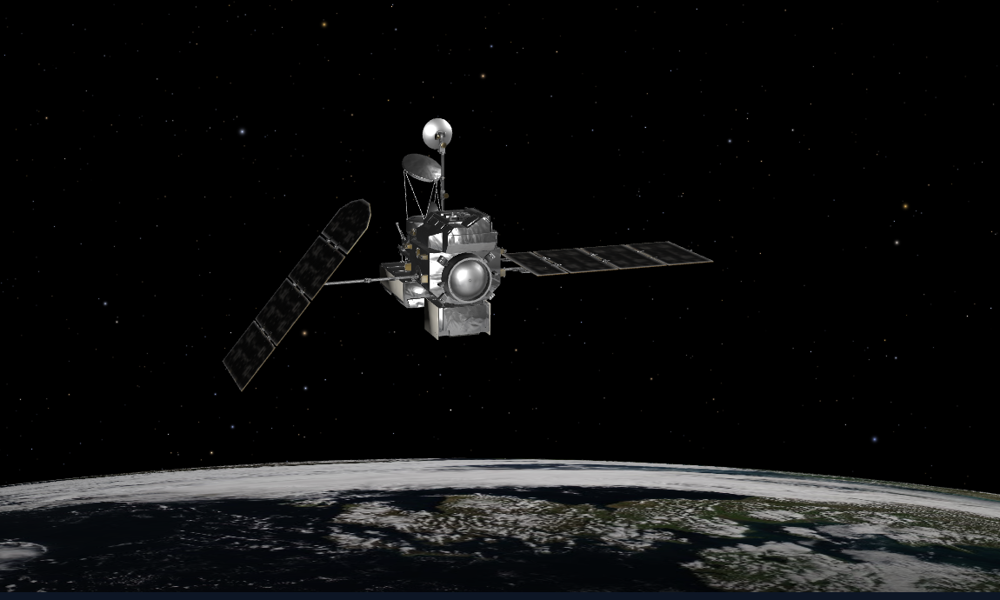

Satellite 1 - Earth Observation
🌧️ GPM Satellite Overview
🚀 Mission Basics
- Full Name: Global Precipitation Measurement (GPM)
- Launched: February 27, 2014 by NASA and JAXA
- Launch Vehicle: H-IIA rocket from Tanegashima Space Center, Japan
- Orbit Type: Non-sun-synchronous, 65° inclination (~407 km altitude)
- Coverage: Global between 65°N and 65°S every 2–3 hours
🯠Mission Objectives
- Measure global precipitation (rain, snow, ice) with high accuracy
- Improve weather forecasting and climate models
- Support flood, drought, and storm monitoring
- Advance understanding of the water cycle and extreme weather events
🔠Key Features
- Instruments:
- DPR: Dual-frequency Precipitation Radar (Ka and Ku bands)
- GMI: GPM Microwave Imager (13 channels)
- Spatial Resolution: ~5 km (GMI), ~4 km (DPR)
- Data Products: Rainfall rate, snow detection, storm structure, precipitation type
- Data Availability: Free via NASA Earthdata and GPM portal
📊 Scientific Impact
- Improves disaster response for floods and cyclones
- Supports agriculture and water resource planning
- Enhances global climate and hydrology research
🔮 Future Prospects
- GPM data continues to support real-time weather and climate services
- Plans for next-gen precipitation missions to expand coverage and resolution